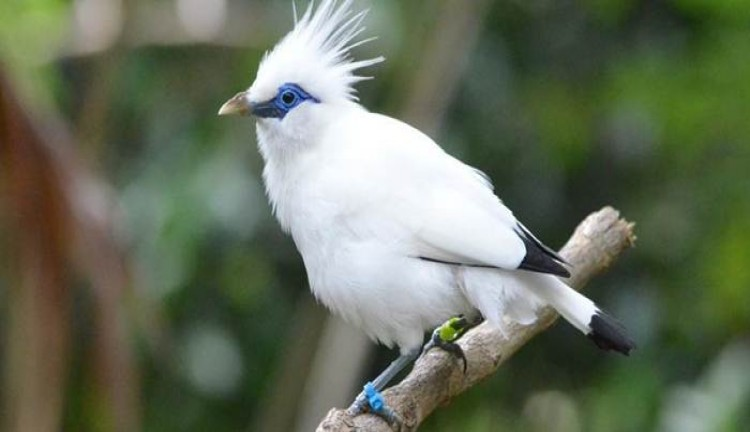

|  | Perbandingan Jalak Bali dengan Jalak Suren | ||||
|---|---|---|---|---|---|
| Asal | Warna Bulu | Panjang | Perkembangbiakan | Habitat | |
| Jalak Bali | Bali | 90% Putih Bersih, Ujung sayap dan ekor berwarna hitam | 25 cm | Menghasilkan 3 butir telur dierami selama 16 hari | Hutan mangrove, hutan rawa, hutan musim dataran rendah dan daerah savana |
| Jalak Suren | Asia Tenggara | Warna Putih pada dahi, pipi, garis sayap, tunggir, dan perut. Warna Hitam pada dada, tenggorokan, dan tubuh bagian atas | 24 cm | Menghasilkan 4-6 butir telur dierami selama 15 hari | Dataran rendah, di kaki perbukitan sampai 700 meter di atas permukaan laut, dan perairan terbuka |